320 samples instead of 960; samples 1-100 and 221-320
Image resolution for plots: 60
Fs = 16000, Fc = 0.875
Original audio at 48 kHz: | Resampled audio at 16 kHz: |
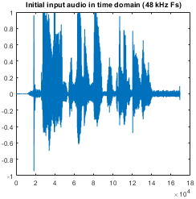 | 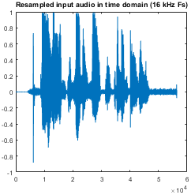 |
| No | Config | Scrambling | Reconstruction |
|---|---|---|---|
| 1 | [0 1 2 3 4 5 6 7 8 9 10 11 12 13 14 15 16 17 18 19] | 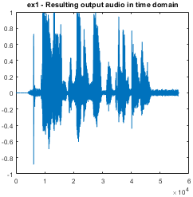 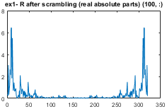 | 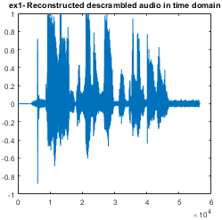 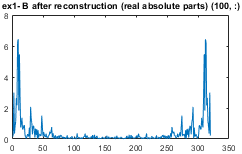 |
| 2 | [19 18 17 16 15 14 13 12 11 10 9 8 7 6 5 4 3 2 1 0] | 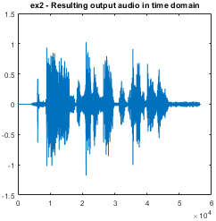 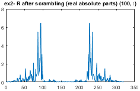 | 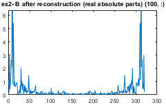 |
| 3 | [9 8 7 6 5 4 3 2 1 0 19 18 17 16 15 14 13 12 11 10] | 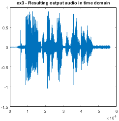 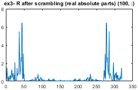 | 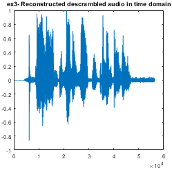 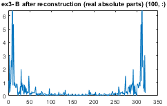 |
| 4 | [3 2 4 1 0 6 7 5 9 8 11 14 12 13 10 18 19 16 17 15] | 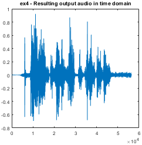 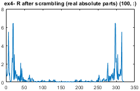 | 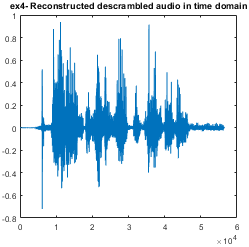 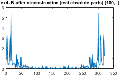 |
| 5 | [1 2 4 0 3 6 5 9 8 7 10 14 12 11 13 15 17 16 19 18] | 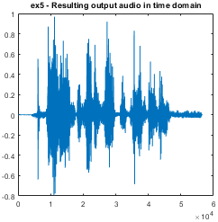 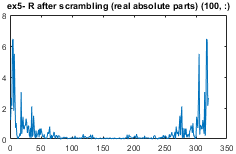 | 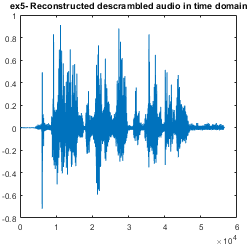 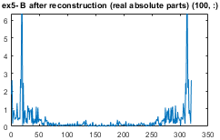 |
| 6 | [1 2 4 3 0 5 9 8 7 6 10 13 12 11 14 19 18 15 16 17] | 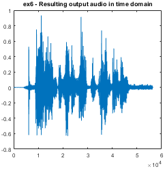 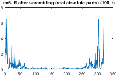 | 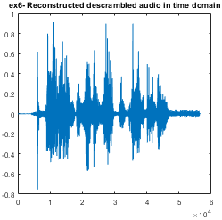 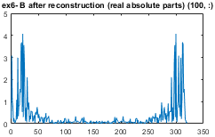 |
| 7 | [3 2 0 4 1 7 6 5 8 9 14 13 11 12 10 15 16 18 17 19] | 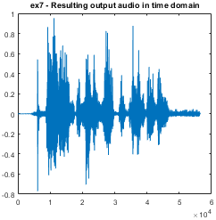 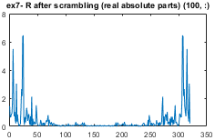 | 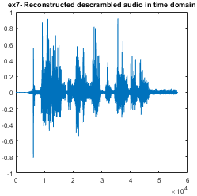 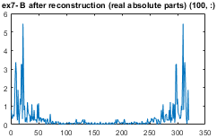 |
| 8 | [1 0 2 5 3 6 4 9 7 8 10 13 11 12 19 17 16 18 15 14] | 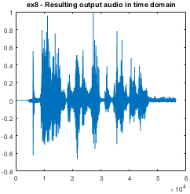 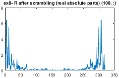 | 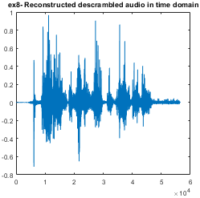 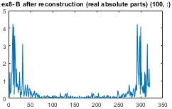 |
| 9 | [2 0 1 3 5 6 4 10 8 7 9 11 12 13 16 19 15 17 18 14] | 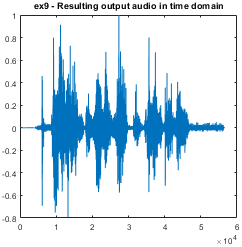 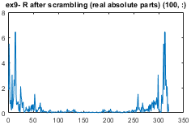 | 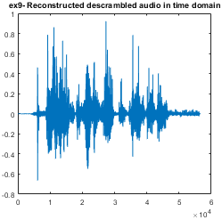 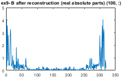 |
| 10 | [1 2 0 6 3 4 5 9 8 7 10 12 11 13 17 18 15 19 16 14] | 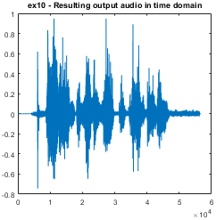 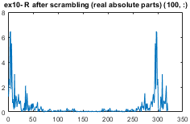 | 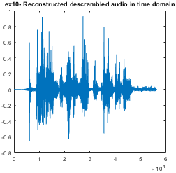 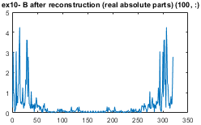 |
| 11 | [2 1 0 3 4 6 5 8 7 10 9 13 12 11 17 15 19 18 14 16] | 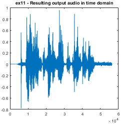 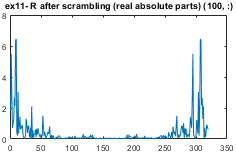 | 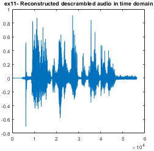 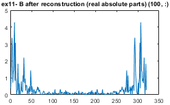 |